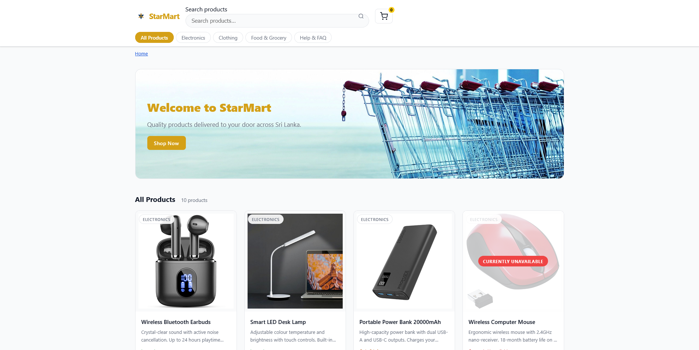
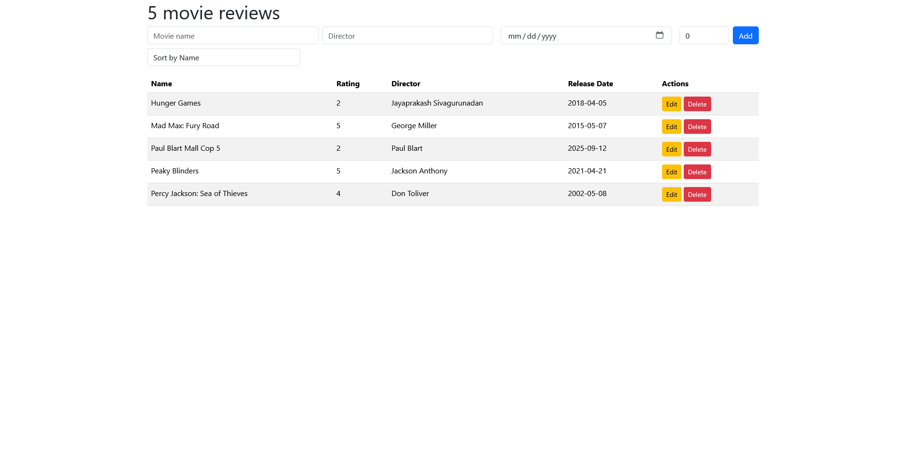
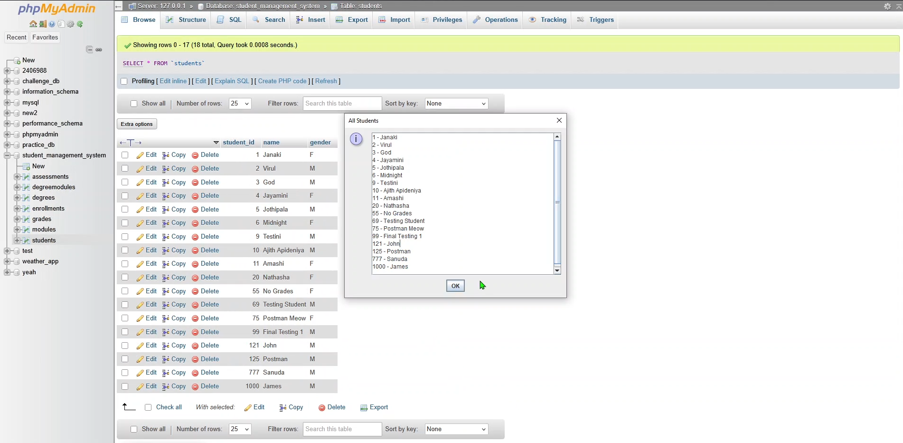
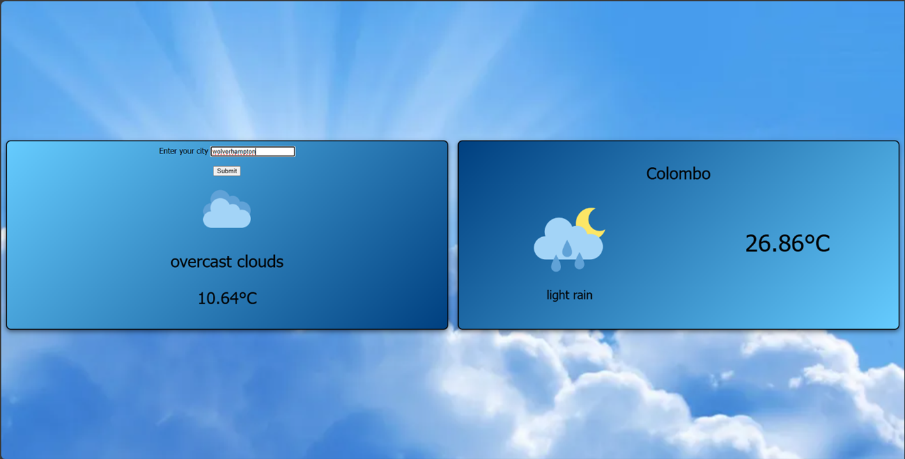
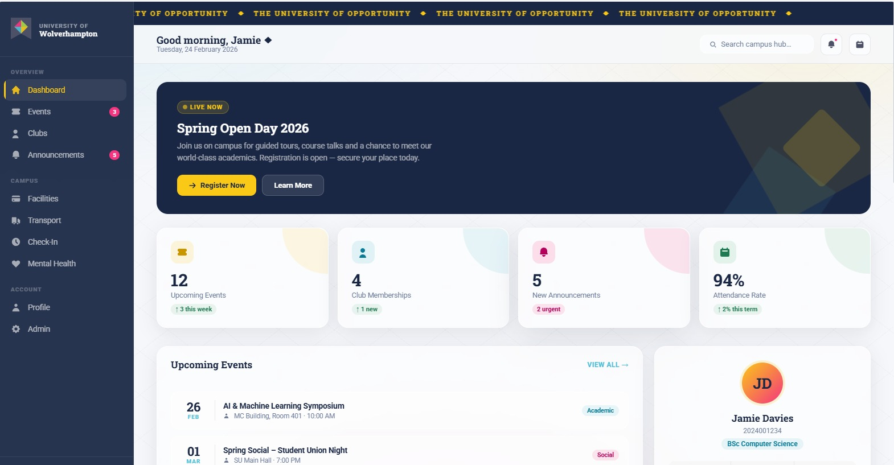
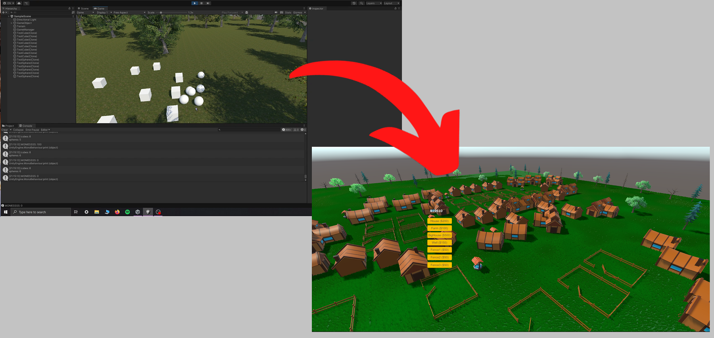

Undergraduate BSc Computer Science (Software Engineering) Student
Software Engineering
Web Development
Cloud Engineering

A single-page application for a fictional e-commerce store, built from scratch using vanilla HTML, CSS and JavaScript. No frameworks. Demonstrates Nielsen's 10 Usability Heuristics through features like live debounced search, cart undo, toast notifications, form validation, and a full checkout flow. Fully responsive across mobile, tablet and desktop.
GitHub Repo
A single-page movie review app built with vanilla HTML, JavaScript and Bootstrap, backed by a Google Firestore NoSQL database. Supports adding, editing and deleting reviews with fields for movie name, director, release date and a 0–5 star rating. Data is fetched and synced in real time via Firestore's onSnapshot listener, with live client-side sorting across all fields.

A Java REST API built with Spring Boot and backed by a MySQL database, modelling a university's academic domain through core OOP principles. The domain layer uses abstract classes, interfaces and inheritance, with a Person base class extended by Student and a Course interface implemented by Degree. A layered architecture separates controllers, services, repositories and models, and supports full CRUD on students, enrolments, modules, grades and assessments, with structured error handling via a global exception handler and SLF4J logging throughout the service layer.

A two-panel weather app built with vanilla HTML, CSS and JavaScript, consuming the OpenWeatherMap API. On load it requests the browser's geolocation to automatically fetch local weather, and a city search field lets you look up anywhere by name. Built across three prototypes: the first calling the API directly from the client, and the third introducing a PHP and MySQL backend hosted on the university's student server. The backend acts as a caching layer, storing results in a database and serving them back for repeat queries within a one-minute window, with the client also maintaining a 30-second localStorage cache on top of that to avoid redundant round trips.

A group assignment to demonstrate collaborative, Agile Scrum software development, building a full-stack student portal for the University of Wolverhampton. Working in a six-person team, I served as Business Analyst and Product Owner, translating requirements from the client into functional specifications, maintaining the product backlog, and acting as the bridge between stakeholders and the development team. This included gap analysis, flagging issues as they emerged, and keeping scope realistic across two phases. The product itself is a Spring Boot REST API backed by MySQL, with a vanilla HTML/CSS/JS web frontend and an Expo React Native mobile app, covering features like JWT authentication, events, club memberships, transport schedules, facility listings and a mental health booking portal.
GitHub Repo
A 3D serious game built in Unity with C#, designed as an educational city-builder for young children. Players manage a budget and place objects like houses, wells and fences around a village, with income passively accumulating based on what they've built, creating a simple feedback loop that introduces kids to resource management. Developed in a two-person team as a university group assignment.